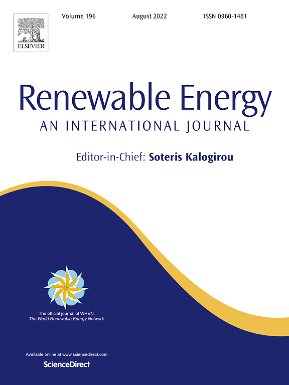
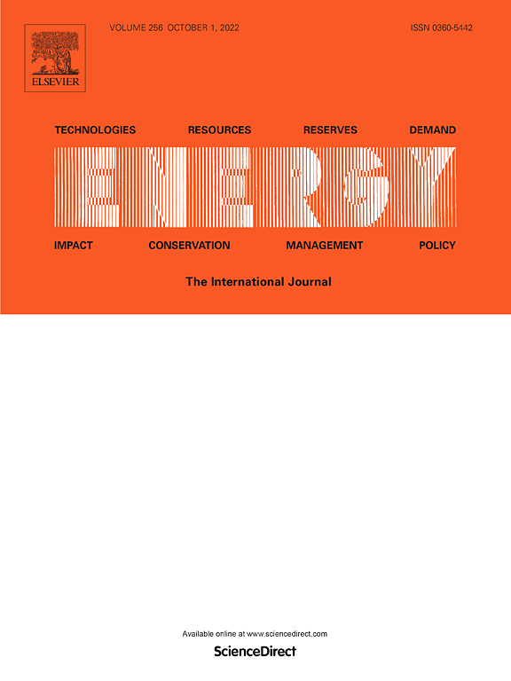
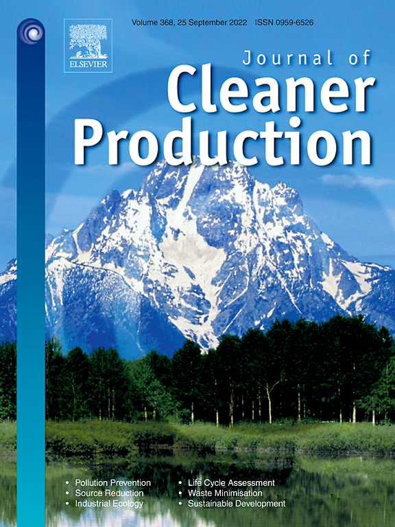
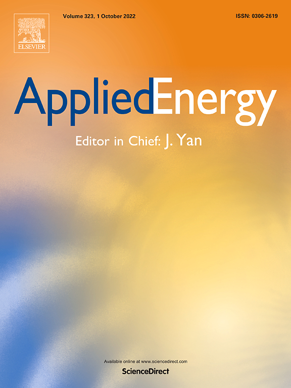
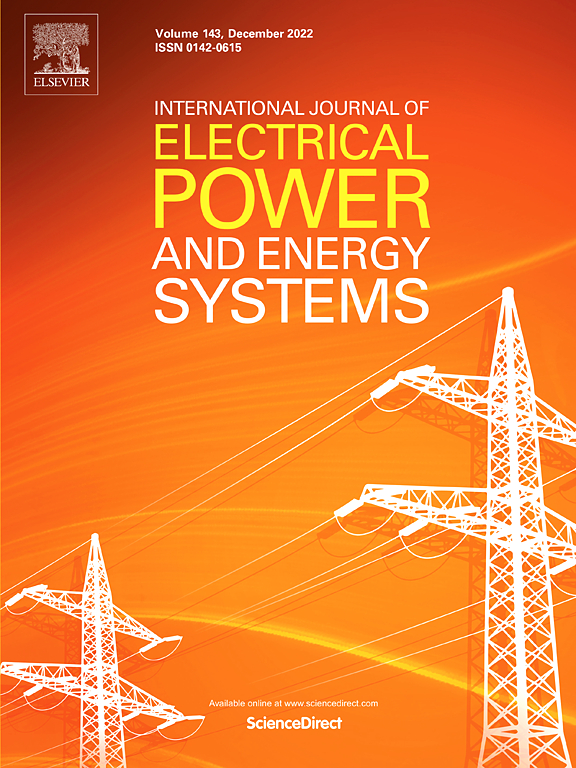
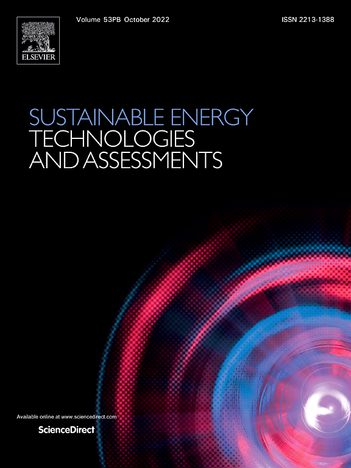
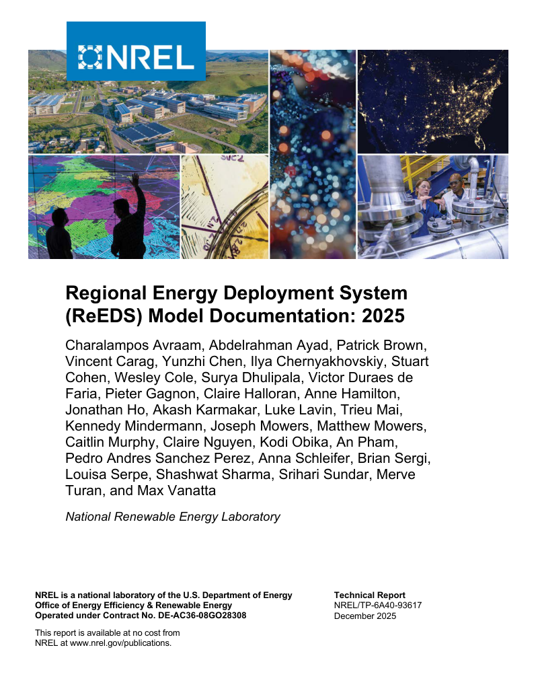
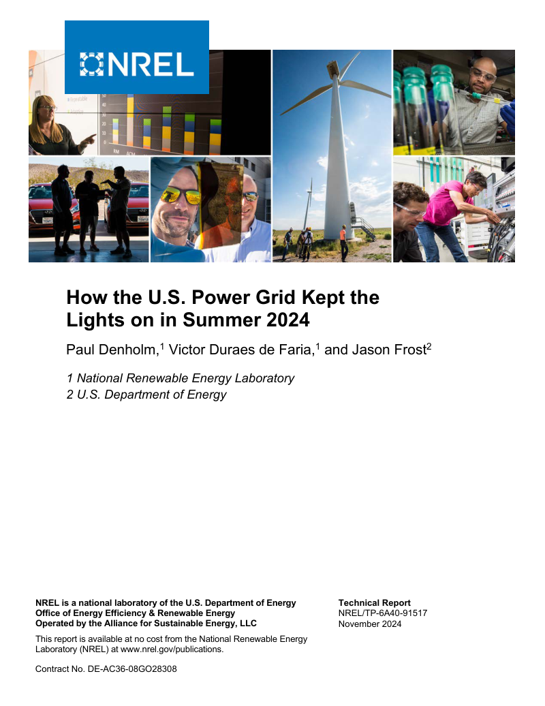

Publications
Research on energy systems, optimization, forecasting, and infrastructure risk.
Journal articles

Renewable Energy journal cover
Y.H. Chou†, V.A.D. de Faria, A.R. de Queiroz, (2026). Transfer learning and convolutional neural networks for solar photovoltaic systems detection in distributed power grids, Renewable Energy (accepted, in editorial production).
Mapping rooftop solar from aerial imagery can help utilities build more complete inventories of distributed generation for grid planning. Using imagery from four California cities, this study systematically compares neural network architectures, transfer learning, and training strategies for identifying solar panel areas. The selected U-Net++ model with a ResNeSt-50 encoder achieved a test intersection-over-union score of 0.8269, measuring the overlap between predicted and annotated panel areas. Fully fine-tuning the pretrained model produced the strongest results among the tested transfer learning strategies. The findings offer practical guidance for selecting and adapting solar mapping models, while showing how annotation quality affects performance evaluation.
V.A.D. de Faria, A.R. de Queiroz, A. Sankarasubramanian, R. Ranjithan, (2026). Routing Optimization Framework for Exploring Time-Varying Urban Road Network Vulnerability under Floods, Journal of Infrastructure Systems.
This study connects stormwater simulations with route optimization to assess how road access changes as flooding develops. The framework evaluates 20,000 possible trips in Wilmington, North Carolina, during Hurricanes Florence, Dorian, and Matthew. It identifies critical road connections and neighborhoods that become isolated, including places where roads remain dry but surrounding routes flood. Accounting for changing flood conditions improves route feasibility in the simulations. The hurricane case studies also reveal disruptions missed by an assessment using static FEMA flood maps, showing the value of detailed flood information for emergency planning.

Energy journal cover
Fused Portfolio Optimization for Harnessing Marine Renewable Energy Resources
M. Maceda, R. Miller†, V.A.D. de Faria, M. Bryant, C. Vermillion, A.R. de Queiroz, (2026). Fused Portfolio Optimization for Harnessing Marine Renewable Energy Resources, Energy.
This study brings device design, site selection, and transmission planning into a single framework for offshore renewable energy investment. The model selects combinations of wind turbines and underwater kites that harvest ocean currents, maximizing electricity delivered to shore within a cost limit. North Carolina case studies show how combining resources with different generation patterns can make better use of shared transmission capacity. The framework connects engineering choices about device design and size with the cost and performance of the overall portfolio.

Journal of Cleaner Production journal cover
N. Jamaleddin, V.A.D. de Faria, A.R. de Queiroz, M. Gabr, (2025). Optimizing co-located offshore wave and wind energy systems: Feasibility, design, and portfolios assessment, Journal of Cleaner Production.
Combining wave devices with offshore wind farms could allow both technologies to share space, anchors, and transmission cables. This study links simulations of mooring systems under extreme conditions with portfolio optimization to evaluate the engineering and economic trade-offs off North Carolina. Shared anchors reduce some infrastructure needs but require changes to line lengths and device spacing. The analysis identifies when adding wave generation can improve the use of transmission capacity and how far wave technology costs must fall to compete with additional wind generation.
M. Nicoli, V.A.D. de Faria, A.R. de Queiroz, L. Savoldi, (2024). Modeling energy storage in long-term capacity expansion energy planning: an analysis of the Italian system, Journal of Energy Storage.
This study examines how the representation of daily electricity demand, renewable generation, and storage operation affects long-term investment plans. An enhanced TEMOA-Italy model compares different levels of time detail and technology availability in pathways to decarbonization through 2050. In the scenarios that allow new electricity storage and exclude nuclear generation, 8–13% of annual electricity production passes through storage by 2050. The results show why daily operating patterns matter for storage planning and help assess the trade-off between modeling detail and computation time.
V.A.D. de Faria, N. Jamaleddin, A.R. de Queiroz, M. Gabr, (2024). Bayesian modeling and mechanical simulations for fragility curve estimation of the mooring system of marine hydrokinetic devices, Applied Ocean Research.
Understanding how hurricanes affect underwater energy devices is essential for assessing their design and investment risks. This study combines Bayesian analysis of wind and ocean-current measurements with mechanical simulations to estimate the vulnerability of a turbine’s mooring system. It develops fragility curves that relate wind speed to the probability of exceeding mooring operating limits. Accounting for rapid changes in current speed produces substantially higher modeled risks than considering current speed alone, demonstrating why dynamic loads matter when evaluating marine energy infrastructure.
V.A.D. de Faria, A.R. de Queiroz, J.F. DeCarolis, (2023). Scenario Generation and Risk-averse Stochastic Portfolio Optimization Applied to Offshore Renewable Energy Technologies, Energy.
This study combines generative machine learning with stochastic optimization to design offshore renewable portfolios for periods of low generation. A neural network creates wind, wave, and ocean-current scenarios that capture relationships among resources at more than 500 locations. The portfolio model selects sites to maximize average output in the worst 5% of generation conditions while respecting an electricity-cost limit. In the case studies, this approach improves performance during low-generation periods compared with portfolios chosen to minimize overall variability, providing a way to evaluate the trade-off between cost and generation risk.
G. Aquila, L.B.S. Morais, V.A.D. de Faria, J.W.M. Lima, L.M.M. Lima, A.R. de Queiroz, (2023). An Overview of Short-Term Load Forecasting for Electricity Systems Operational Planning: Machine Learning Methods and the Brazilian Experience, Energies.
Accurate forecasts of electricity demand support generation scheduling, reliability decisions, and market prices. This review brings together statistical and machine learning approaches to forecasting demand over short horizons, explaining how weather inputs, calendar patterns, and the organization of forecast data affect model design. It connects these methods to Brazil’s operational planning process and examines how distributed solar changes the demand that the grid must supply. The review identifies practical research directions for improving forecasts as electricity systems and consumer behavior evolve.

Applied Energy journal cover
L.B.S. Morais, G. Aquila, V.A.D. de Faria, L.M.M. Lima, J.W.M. Lima, A.R. de Queiroz, (2023). Short-term load forecasting using neural networks and global climate models: An application to a large-scale electrical power system, Applied Energy.
This study combines neural networks and weather forecasts to predict the next day’s electricity demand at half-hour intervals in Brazil’s Central-Southeast market. During a three-month test using temperature inputs from the system operator, a recurrent neural network achieved a mean absolute percentage error of 1.18%, compared with 2.01% for the operator’s demand forecasts. A separate experiment covering 2019 demonstrates the use of NOAA ensemble weather forecasts as alternative inputs. Together, the experiments show how model design and weather information can support more accurate demand forecasting for operational planning.
Optimizing Offshore Renewable Portfolios Under Resource Variability
V.A.D. de Faria, A.R. de Queiroz, J.F. DeCarolis, (2022). Optimizing Offshore Renewable Portfolios Under Resource Variability, Applied Energy.
This study examines where to place offshore wind, wave, and ocean-current devices to balance electricity cost with the variability of their combined output. A portfolio optimization model evaluates more than 5,000 candidate locations off North Carolina, and the TEMOA electricity planning model assesses the selected portfolios’ value to the wider power system. Combining complementary resources produces smoother generation than relying on a single resource. The analysis also estimates the technology cost reductions needed for deployment under the study’s planning assumptions, connecting offshore site selection with long-term electricity investment.
V.A.D. de Faria, A.R. de Queiroz, L.M.M. Lima, J.W.M. Lima, B.C. Silva, (2022). An assessment of multi-layer perceptron networks for streamflow forecasting in large-scale interconnected hydrosystems, International Journal of Environmental Science and Technology.
Streamflow forecasts help determine how much water will be available for hydropower generation. This study develops neural network forecasts up to 14 days ahead for 55 plants in Brazil’s Paraná Basin, including a procedure for selecting useful inputs from across the river network. The models achieved lower mean absolute percentage errors than the system operator’s forecasts at every plant in each year from 2014 to 2016. The work provides a systematic approach to selecting, training, and evaluating forecasting models across a large interconnected hydropower system.

International Journal of Electrical Power & Energy Systems journal cover
V.A.D. de Faria, J.V. Bernardes, E.C. Bortoni, (2020). Parameter estimation of synchronous machines considering field voltage variation during the sudden short-circuit test, International Journal of Electrical Power & Energy Systems.
Accurate generator parameters are needed to model power-system behavior during disturbances. This study improves parameter estimation from sudden short-circuit tests by accounting for changes in field voltage that conventional methods assume to be constant. Tests using simulations of a 140 MVA generator show substantially lower estimation errors when the voltage history is included. A complementary algorithm identifies when voltage changes are small or brief enough for the conventional method to remain within a chosen error tolerance, helping practitioners assess which estimation approach is appropriate.
Hydropower Revenues under the Threat of Climate Change in Brazil
A.R. de Queiroz, V.A.D. de Faria, L.M.M. Lima, J.W.M. Lima, (2019). Hydropower Revenues under the Threat of Climate Change in Brazil, Renewable Energy.
This study traces how climate-related changes in river flows could affect the energy rights and revenues of Brazilian hydropower plants. It combines climate projections, hydrological models, and optimization to estimate changes in assured energy—the energy allocation available to support electricity sales contracts. The modeled scenarios show substantial regional differences, with gains for many southern plants and losses in the North and Northeast. Valuing these changes at a fixed reference electricity price illustrates their financial implications and highlights the importance of climate risk in hydropower investment and portfolio planning.

Sustainable Energy Technologies and Assessments journal cover
Evaluation of manufacturers strategies to obtain high-efficient induction motors
E.C. Bortoni, J.V. Bernardes, P.V.V. da Silva, V.A.D. de Faria, P.A.V. Vieira, (2019). Evaluation of manufacturers strategies to obtain high-efficient induction motors, Sustainable Energy Technologies and Assessments.
This study develops a way to investigate how manufacturers improve induction-motor efficiency using information available in product catalogs. An algebraic method estimates the electrical parameters needed to model motor performance, allowing comparisons without access to proprietary designs. Applied to dozens of motors from four manufacturers, the method reveals different approaches to reducing losses and reaching higher efficiency classes. The results help explain the engineering choices behind catalog performance ratings and support comparisons among motor designs.
Cooperative Game Theory and Last Addition Method in the Allocation of Firm Energy Rights
V.A.D. de Faria, A.R. de Queiroz, L.M.M. Lima, J.W.M. Lima, (2018). Cooperative Game Theory and Last Addition Method in the Allocation of Firm Energy Rights, Applied Energy.
Coordinating hydropower plants increases the energy available from the system, raising the question of how those benefits should be shared among owners. This study combines each plant’s incremental contribution with cooperative game theory to allocate firm energy rights while limiting incentives for groups of plants to leave the arrangement. A new optimization formulation makes the approach practical for a Brazilian system with 170 plants. The framework connects investment incentives with cooperation and provides a computational method for evaluating allocations across a large hydropower network.
Conference papers
Forthcoming in IEEE Xplore
Multidimensional uncertainty assessment in a capacity expansion model for the U.S. power system
V.A.D. de Faria, B. Sergi, P.R. Brown, (2026). Multidimensional uncertainty assessment in a capacity expansion model for the U.S. power system, 19th International Conference on Probabilistic Methods Applied to Power Systems (PMAPS), Salt Lake City, UT, USA.
This study examines how uncertainty in demand, technology costs, fuel prices, and renewable siting affects U.S. electricity investment through 2050. It runs 1,137 simulations with the ReEDS capacity expansion model, varying several inputs together to capture interactions that isolated sensitivity tests can miss. Solar accounts for the largest share of capacity additions across the simulations, while generation mixes and transmission investments vary substantially. Comparing sampling methods and federal policy scenarios helps distinguish consistent investment trends from outcomes that depend strongly on particular assumptions.
Accepted; in editorial production. Forthcoming in IEEE Xplore.
Technical reports

Report cover · 2025
Regional Energy Deployment System (ReEDS) Model Documentation: 2025
C. Avraam, A. Ayad, P. Brown, V. Carag, Y. Chen, I. Chernyakhovskiy, S. Cohen, W. Cole, S. Dhulipala, V.A.D. de Faria, et al., (2025). Regional Energy Deployment System (ReEDS) Model Documentation: 2025, National Renewable Energy Laboratory (NREL).
This report documents how the ReEDS model evaluates investment and operation across the U.S. electricity system. It explains the data, assumptions, and methods used to represent generation, storage, transmission, demand, and policy. It also describes how reliability assessments feed periods of potential supply shortage back into investment planning. The documentation gives researchers and planners the information needed to understand model results, compare scenarios, and judge how modeling assumptions affect conclusions about the future power system.

Report cover · 2024
How the U.S. Power Grid Kept the Lights on in Summer 2024
P. Denholm, V.A.D. de Faria, J. Frost, (2024). How the U.S. Power Grid Kept the Lights on in Summer 2024, National Renewable Energy Laboratory (NREL).
This report uses operating data to explain how U.S. electricity systems met high demand during summer 2024, with a detailed look at Texas and comparisons with other regions. It shows how solar generation reduced afternoon demand on other resources and shifted the remaining peak toward evening, when batteries could help meet demand. Conventional generation and other resources also played essential roles. The analysis explains how this changing daily pattern affects reliability and why planning must account for when each resource contributes, alongside how much capacity is installed.